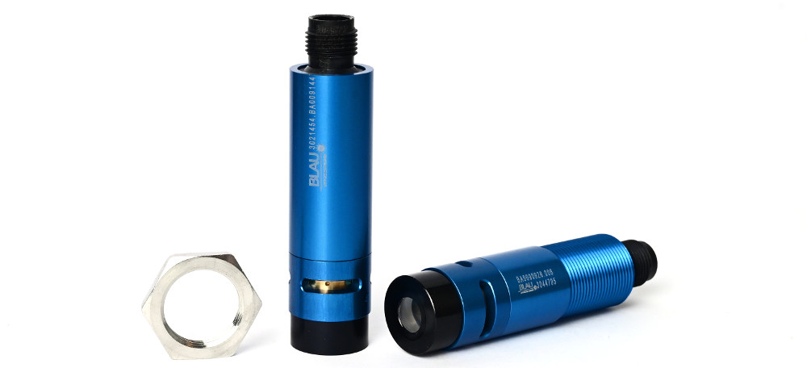

Neu aus der Fertigung
MVpulse – Augensicherheit und hohe Leistung
Unser MVpulse verbindet zwei Kriterien der industriellen Bildverarbeitung: viel Licht mit bis zu 100 mW Ausgangsleistung – und Augensicherheit nach Laserklasse 2.

Präzision in Licht und Optik
Wir entwickeln und fertigen Linienlaser, Punktlaser und Powell-Linsen – für Bildverarbeitung, Maschinenbau, Medizintechnik und Forschung. Als Standardprodukt oder genau nach Ihren Vorgaben, seit 1987 in Überlingen am Bodensee.
Neu aus der Fertigung
Unser MVpulse verbindet zwei Kriterien der industriellen Bildverarbeitung: viel Licht mit bis zu 100 mW Ausgangsleistung – und Augensicherheit nach Laserklasse 2.

Sortiment
Fünf Produktbereiche – alle in Überlingen entwickelt und gefertigt. Alle Produkte

Feine, gleichmäßig helle Laserlinien für 3D-Messung und Prüfung mit Kamerasystemen – 8 Modelle.
Machine Vision ansehen
Klar definierte Linien und Strahlmuster (DOE).
Ansehen
Rundes Strahlprofil – Optik und Elektronik passend zu Ihrer Aufgabe.
Ansehen
Laserlinien mit gleichmäßiger Helligkeit. Eigenfertigung seit 2019.
Ansehen
Nach Ihren Vorgaben – von der Entwicklung bis zur Serie.
AnsehenAusgewählte Produkte

Der bewährte Standard für die industrielle Bildverarbeitung.

Viel Licht für Ihre Kamera – und trotzdem augensicher.

Einschrauben, fertig: ab Werk nach Ihren Vorgaben justiert.
So finden Sie Ihr Modul
Ein paar Fragen zu Ihrer Anwendung – wir zeigen die passenden Produkte.
Finder starten 02Wellenlänge, Leistung, Optik und Elektrik selbst zusammenstellen – mit Datenblatt.
Konfigurieren 03Beschreiben Sie uns Ihre Aufgabe. Wir empfehlen das passende Modul oder eine Anpassung.
Anfrage sendenAnwendungen
Unsere Laser stecken in Röntgengeräten, Prüfanlagen, Robotern und Laboraufbauten. Wählen Sie Ihre Branche:

Präzise und augensichere Lasermodule für Diagnostik, Therapie und Patientenumgebungen.
Passende Produkte

Robuste Lasermodule für Fertigungs- und Produktionsanlagen.
Passende Produkte

Laserlinien für schnelle Bildverarbeitung in automatisierten Prozessen.
Passende Produkte

Präzise Laser für Halbleiterfertigung und Elektronikproduktion.
Passende Produkte
Flexible Lösungen für Labor und Wissenschaft.
Passende Produkte
Beschreiben Sie uns kurz Ihre Aufgabe. Wir sagen Ihnen, welches Modul passt – oder was wir für Sie anpassen können.